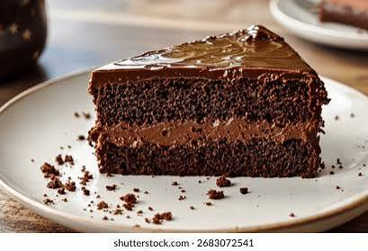

Accueil
Gateau au Chocolat

Ingrédients
- - 3 oeufs
- - 200g de chocolat noir
- - 120g de beurre demi sel mou
- - 6 cs de sucre en poudre (90g)
- - 2 cs bien bombées de farine T55 (50g)
Étapes
- Préchauffez le four à 160°C.
- Commencez par bien fouetter le beurre. Ajoutez-y le sucre et fouettez bien jusqu’à obtenir une consistance crémeuse.
- Ajoutez y 1 oeuf et fouettez.
- Ajoutez 1 cuillère à soupe de farine et fouettez à nouveau.
- Ajoutez ensuite le deuxième oeuf et fouettez.
- Ajoutez la deuxième cuillère de farine et fouettez.
- Ajoutez ensuite le dernier oeuf et fouettez.
- Faites ensuite fondre le chocolat au micro-ondes (ou au bain marie) et ajoutez-le à la préparation puis fouettez.
- Versez la préparation dans un moule chemisé de papier sulfurisé. Enfournez pour 25 minutes à 160°C.
À la sortie du four, laissez le fondant au chocolat refroidir avant de le démouler et le couper.